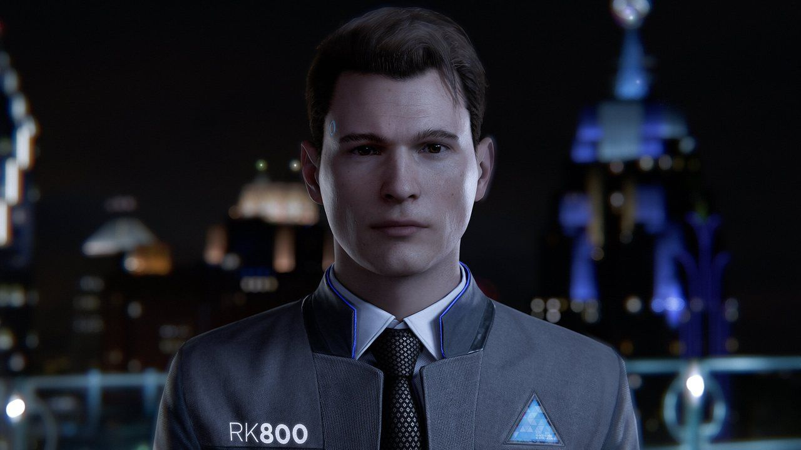
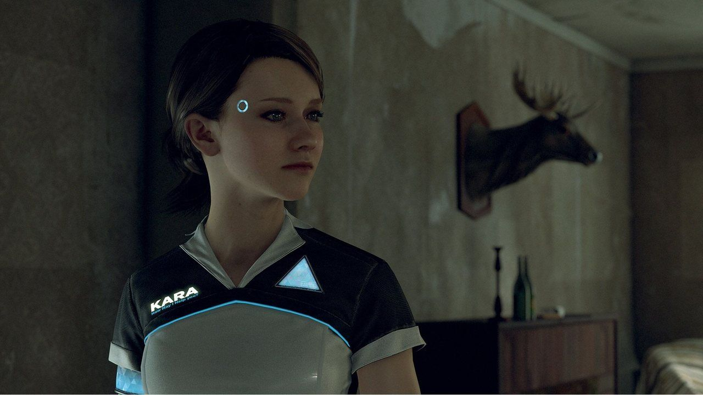
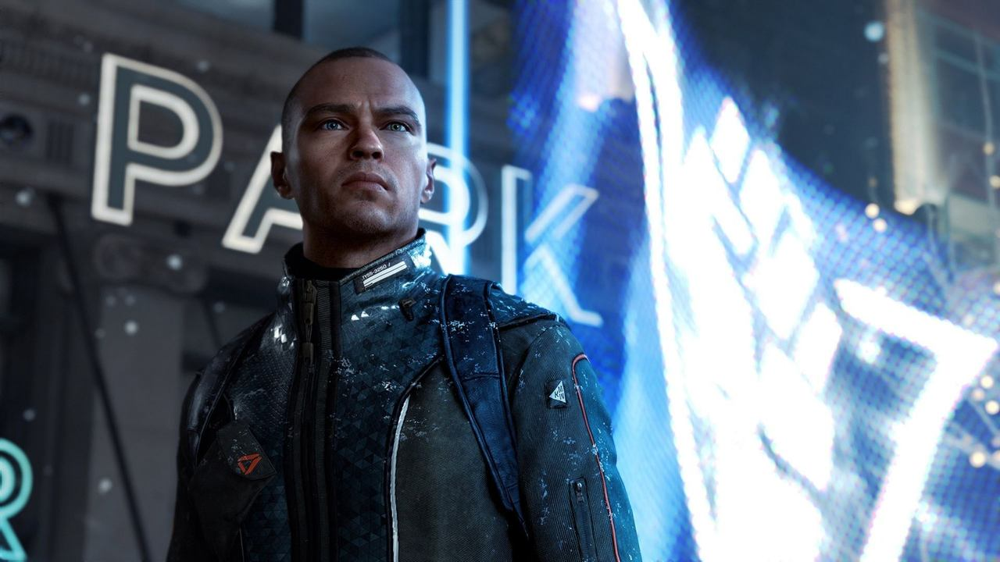
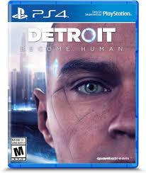

Detroit Become Humanse passa na cidade de Detroit, nos Estados Unidos, bem na fronteira com o Canadá. No jogo, a empresa CyberLife desenvolveu androides complexos, extremamente capazes e com um corpo idêntico ao de humanos, pelo menos esteticamente. Em pouco tempo, a invenção tomou conta de Detroit, com os androides sendo usados extensivamente pelo público para várias tarefas rotineiras. A história de Detroit Become Human se passa nessa Detroit tomada por pessoas com seus androides pessoais, mas acompanhando três histórias com suas próprias perspectivas. Cada segmento tem um androide como protagonista. São eles que apresentam os vários pontos de vista distintos a respeito da função dos androides e se eles devem, ou não, ter autonomia.
O primeiro é Connor, um androide detetive. Sua função é investigar e prender androides rebeldes que não obedecem ordens e, em alguns casos, até partem para a violência contra seus antigos donos. A obrigação de ir contra seus iguais é um dos principais dilemas ao jogar como Connor. Além disso, Connor trabalha ao lado de Hank, um detetive que desgosta de androides por causa de seu passado. Em Detroit Become Human, Connor é o primeiro protagonista que o jogador controla O próximo núcleo é com Kara, uma androide empregada doméstica. Ela trabalha na casa de um homem, Todd Williams, que logo se mostra agressivo não apenas com ela, mas com sua filha Alice. As agressões de Todd e a vontade de proteger Alice a fazem adquirir consciência e começar a lutar contra as duas ordens.
Kara sofre com violência doméstica e decide se rebelar na história de Detroit Become Human O terceiro é Markus, um androide doméstico que trabalha como assistente e enfermeiro do pintor Carl Manfred. Diferente de Kara, o dono de Markus é gentil e age como figura paternal para ele. Mas, por causa de um acidente, Markus ganha autonomia, mas se torna um fugitivo e começa a buscar um novo lar e uma nova missão.
Markus é um dos personagens mais importantes de Detroit Become Human e suas ações têm consequências para a sociedade como um todo As realidades dos três se entrelaçam no cenário de disputas políticas e sociais entre humanos, que querem manter os androides sobre controle, e os androides que querem o direito de viver como indivíduos. Em determinados momentos, os protagonistas podem se encontrar e até se enfrentar. Um acontecimento em uma rota pode até afetar o destino de outro. Por isso, não são três histórias diferentes, mas três partes de uma única história maior.
| preço do jogo | |
| playstation | epicgames |
| R$35,75 | R$39,99 |
| foto |  |